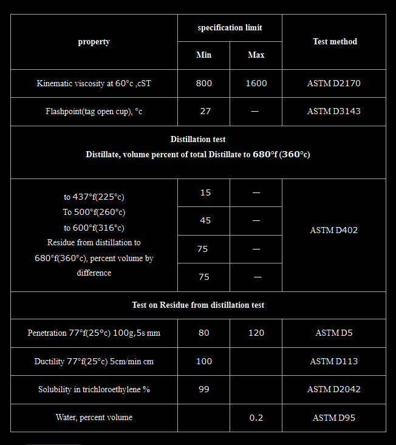

Cutback Bitumen RC‑800 – General Description │ Iran Bitumen Supply Int │ IBSI
Cutback Bitumen RC‑800 is a rapid‑curing cutback asphalt produced by blending high‑quality penetration‑grade bitumen with highly volatile petroleum solvents such as gasoline or naphtha. These solvents temporarily reduce the viscosity of the bitumen, allowing it to be applied at ambient temperatures without heating. Once applied, the solvent evaporates quickly, enabling the bitumen to regain its original hardness and function as a strong, durable binder within the pavement structure. Rapid‑curing cutbacks like RC‑800 are formulated for applications requiring fast setting, deep penetration, and excellent adhesion. Specifications allow up to 45% distillate content, giving RC‑800 its characteristic rapid evaporation rate. This makes it ideal for prime coats, patching mixes, and cold‑applied asphalt treatments where quick curing is essential. At Iran Bitumen Supply Int │ IBSI, our RC‑800 is manufactured from premium vacuum residue feedstock and blended with carefully selected volatile solvents to ensure consistent curing behavior. It fully complies with ASTM D2028 standards for rapid‑curing cutback petroleum asphalts. The thermoplastic nature of the base bitumen ensures predictable performance across varying temperatures, softening when heated and hardening as it cools.
Understanding How RC‑800 Works
Cutback asphalt is produced by adding volatile solvents to bitumen to make it liquid at ambient temperatures. In RC‑800, gasoline or naphtha is used as the primary cutter, resulting in a binder that cures rapidly once applied. This temporary reduction in viscosity allows the bitumen to coat aggregates efficiently, penetrate granular surfaces, and form a strong adhesive layer. As the solvent evaporates, the bitumen returns to its original viscosity and hardness. Proper evaporation is essential to avoid long‑term softening of the pavement. When formulated correctly, RC‑800 provides excellent adhesion, durability, and long‑term performance in demanding construction environments.
Applications of Cutback Bitumen RC‑800
Cutback Bitumen RC‑800 is widely used in road construction and maintenance, particularly in prime coats, patching materials, and stockpile asphalt mixes. Its rapid curing properties make it ideal for preparing non‑asphalt base courses before applying hot mix asphalt. RC‑800 penetrates deeply into the surface, stabilizes loose particles, and creates a waterproof foundation that enhances the durability of the final pavement layer. RC‑800 is also used in cold‑applied asphalt treatments, where heating equipment is not available or practical. Its ability to wet aggregates effectively makes it suitable for surface treatments, seal coats, and waterproofing applications. It fills capillary voids, bonds mineral particles, and protects surfaces from moisture ingress. Because RC‑800 does not require heating, it is especially valuable in remote locations, small‑scale projects, and situations where rapid construction progress is required.
Packing Options for Cutback Bitumen RC‑800
At Iran Bitumen Supply, several packaging formats ensure safe handling and efficient transport. RC‑800 is available in bulk tankers for large‑scale projects and in new thick steel drums placed on pallets to prevent leakage during containerized shipping. These packaging options ensure that the product arrives in optimal condition and is ready for immediate use.
Safety Guidelines for Handling RC‑800
RC‑800 contains highly volatile solvents and must be handled with care. It should be transported, stored, and applied at the lowest practical temperature. All ignition sources must be eliminated during use due to the flammable nature of the solvents. Direct inhalation of vapors and skin contact should be avoided, and appropriate personal protective equipment must be worn at all times. The product and any washings must never be allowed to enter stormwater or sewer systems.

Specification of cutback bitumen RC-800